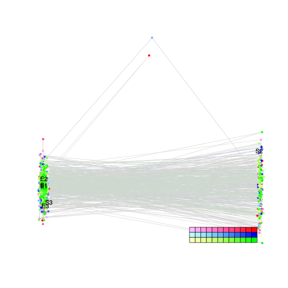
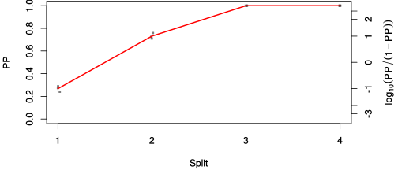
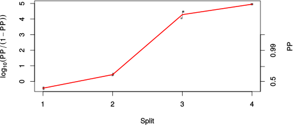

| chain # | burnin | subsample | Iterations (remaining) | command line | subdirectory | directory |
|---|---|---|---|---|---|---|
| 1 | 10000 | 1 | 90000 | bali-phy E1_AA_red3_v2_Lambda.fas -s 43263 -n Lambda_c1 | Lambda_c1-1 | /DATA/work/ONCOGENEVOL/database/trees/Bali-Phy/E1 |
| 2 | 10000 | 1 | 90000 | bali-phy E1_AA_red3_v2_Lambda.fas -s 53617 -n Lambda_c2 | Lambda_c2-1 | /DATA/work/ONCOGENEVOL/database/trees/Bali-Phy/E1 |
| 3 | 10000 | 1 | 90000 | bali-phy E1_AA_red3_v2_Lambda.fas -s 10256 -n Lambda_c3 | Lambda_c3-1 | /DATA/work/ONCOGENEVOL/database/trees/Bali-Phy/E1 |
| P(data|M) = -6935.207 +- 0.861 | Complete sample: 5 topologies | 95% Bayesian credible interval: 2 topologies |

Phylogeny Distribution

| Partition support: Summary |
| Partition support graph: SVG |
| 50% consensus | Newick (+PP) | SVG | |||||
| 66% consensus | Newick (+PP) | SVG | |||||
| 80% consensus | Newick (+PP) | SVG | |||||
| 90% consensus | Newick (+PP) | SVG | |||||
| 95% consensus | Newick (+PP) | SVG | |||||
| 99% consensus | Newick (+PP) | SVG | |||||
| 100% consensus | Newick (+PP) | SVG | |||||
| MAP | Newick (+PP) | SVG | |||||
| greedy | Newick (+PP) | SVG |
{kind=link}
{kind=link}
{kind=link}
{kind=link}
{kind=link}
{kind=link}
{kind=link}
{kind=link}
Alignment Distribution
Partition 1
| Diff | Min. %identity | # Sites | Constant | Informative | ||||
|---|---|---|---|---|---|---|---|---|
| Initial | FASTA | HTML | Diff | 5.08% | 669 | 2 (0.299%) | 107 (16%) | |
| Best (WPD) | FASTA | HTML | AU | 37.9% | 749 | 153 (20.4%) | 216 (28.8%) |


Mixing
| burnin (scalar) | ESS (scalar) | ESS (partition) | ASDSF | MSDSF | PSRF-CI80% | PSRF-RCF |
|---|---|---|---|---|---|---|
| 1568 | 1638 | 1134.457 | 0.012 | 0.025 | 1.001 | 1.006 |
Projection of RF distances for the first 3 chains3D | Variation of split PPs across chains |
Scalar variables
| Statistic | Median | 95% BCI | ACT | ESS | burnin | PSRF-CI80% | PSRF-RCF |
|---|---|---|---|---|---|---|---|
| prior | -469.7 | (-526.5, -414.5) | 112.5 | 2399 | 1125 | 1 | 0.9932 |
| prior_A1 | -451.1 | (-507, -397.4) | 80.45 | 3356 | 554 | 1 | 0.9954 |
| likelihood | -6892 | (-6930, -6855) | 87.01 | 3103 | 216 | 1.001 | 0.9953 |
| logp | -7361 | (-7401, -7327) | 91.85 | 2939 | 1568 | 1 | 0.9972 |
| Heat.beta | 1 | ||||||
| Scale1 | 2.064 | (0.8058, 4.28) | 1.013 | 266658 | 133 | 1 | 0.9995 |
| S1.F.pi.A | 0.06698 | (0.05597, 0.07892) | 8.603 | 31386 | 313 | 0.9999 | 1.002 |
| S1.F.pi.R | 0.04046 | (0.0317, 0.04946) | 8.355 | 32316 | 356 | 0.9999 | 0.9948 |
| S1.F.pi.N | 0.03409 | (0.02674, 0.0418) | 8.762 | 30815 | 393 | 1 | 1 |
| S1.F.pi.D | 0.0666 | (0.05528, 0.07859) | 9.521 | 28357 | 285 | 1 | 1.001 |
| S1.F.pi.C | 0.03985 | (0.02979, 0.05084) | 7.939 | 34007 | 235 | 1 | 1 |
| S1.F.pi.Q | 0.04167 | (0.03348, 0.05033) | 8.442 | 31984 | 501 | 0.9998 | 1.004 |
| S1.F.pi.E | 0.06407 | (0.05373, 0.07492) | 8.355 | 32315 | 347 | 0.9998 | 0.9902 |
| S1.F.pi.G | 0.06175 | (0.0491, 0.07511) | 9.629 | 28039 | 710 | 1 | 0.9998 |
| S1.F.pi.H | 0.02247 | (0.01627, 0.02944) | 8.116 | 33268 | 317 | 0.9998 | 1.001 |
| S1.F.pi.I | 0.04188 | (0.03321, 0.0512) | 8.432 | 32019 | 385 | 1 | 0.9948 |
| S1.F.pi.L | 0.09682 | (0.08256, 0.112) | 8.548 | 31585 | 297 | 0.9999 | 0.9998 |
| S1.F.pi.K | 0.05099 | (0.04165, 0.06102) | 8.123 | 33240 | 285 | 1 | 0.9995 |
| S1.F.pi.M | 0.02444 | (0.01803, 0.03132) | 8.003 | 33737 | 553 | 0.9999 | 0.9985 |
| S1.F.pi.F | 0.05672 | (0.0451, 0.06888) | 8.135 | 33191 | 347 | 1.001 | 0.9938 |
| S1.F.pi.P | 0.03995 | (0.03016, 0.05018) | 9.022 | 29927 | 456 | 0.9997 | 1.002 |
| S1.F.pi.S | 0.07737 | (0.06605, 0.08959) | 8.579 | 31472 | 197 | 1 | 1.001 |
| S1.F.pi.T | 0.05795 | (0.04772, 0.06871) | 8.826 | 30593 | 252 | 1 | 1 |
| S1.F.pi.W | 0.01322 | (0.007384, 0.01978) | 8.51 | 31727 | 238 | 1 | 0.9994 |
| S1.F.pi.Y | 0.03276 | (0.0244, 0.04148) | 7.746 | 34855 | 536 | 1.001 | 0.998 |
| S1.F.pi.V | 0.06658 | (0.05495, 0.07851) | 8.325 | 32432 | 280 | 0.9997 | 1.006 |
| I1.RS07.meanIndelLengthMinus1 | 2.545 | (1.589, 3.776) | 47.4 | 5696 | 232 | 1 | 0.9986 |
| I1.RS07.logLambda | -3.909 | (-4.21, -3.596) | 17.22 | 15680 | 142 | 0.9998 | 1 |
| |A1| | 728 | (706, 751) | 122 | 2213 | 407 | 0.956 | 1 |
| #indels1 | 54 | (46, 62) | 58 | 4655 | 342 | 0.9091 | 0.9981 |
| |indels1| | 193 | (151, 239) | 164.9 | 1637 | 961 | 0.9884 | 0.9977 |
| #substs1 | 1055 | (1031, 1074) | 140.4 | 1923 | 422 | 0.9655 | 1 |
| Scale1*|T| | 2.216 | (2.068, 2.369) | 7.841 | 34434 | 126 | 0.9998 | 1 |
| |A| | 728 | (706, 751) | 122 | 2213 | 407 | 0.956 | 1 |
| #indels | 54 | (46, 62) | 58 | 4655 | 342 | 0.9091 | 0.9981 |
| |indels| | 193 | (151, 239) | 164.9 | 1637 | 961 | 0.9884 | 0.9977 |
| #substs | 1055 | (1031, 1074) | 140.4 | 1923 | 422 | 0.9655 | 1 |
| |T| | 1.074 | (0.3765, 2.058) | 1 | 270003 | 120 | 0.9999 | 0.9997 |